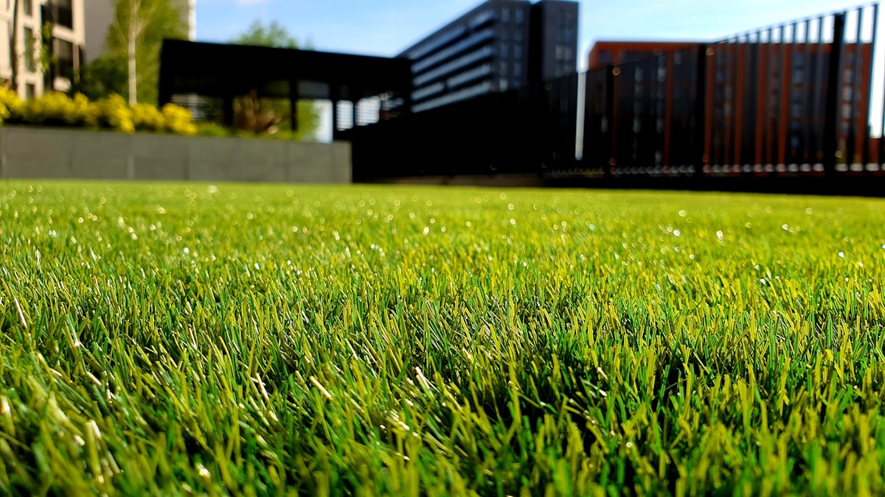
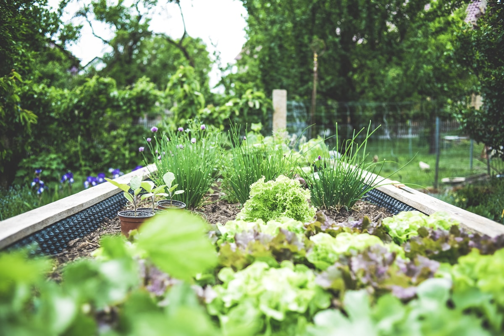
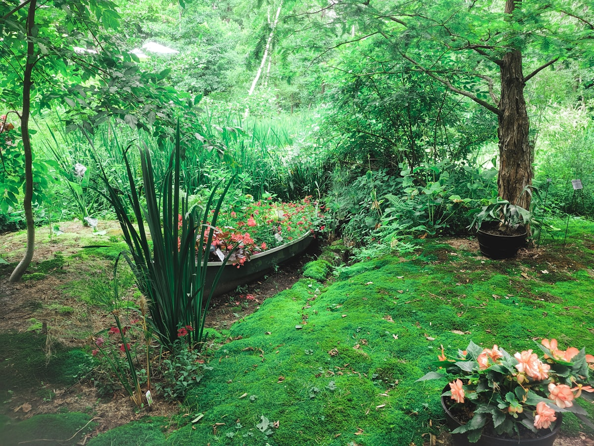

Kerttervezés & kertépítés
Az új kert nálam a papíron kezdődik: felmérem az adottságokat, meghallgatom, hogyan szeretné használni a teret, és ehhez tervezek egységes, élhető kertet — a növényválasztástól a burkolatokig.
- Helyszíni felmérés, koncepció- és ültetési terv
- Tereprendezés, talaj-előkészítés, drénezés
- Növénykiültetés, kerti utak, pihenő- és játszóterek
- Kulcsrakész átadás, gondozási útmutatóval
Gyepesítés & sportgyep
A tökéletes pázsit szakma. Magvetéssel vagy gyeptéglával dolgozom, a talajprogramtól a nyírási ritmusig mindent a helyszínhez igazítva — a családi pázsittól a sportpálya-szintű, terhelhető gyepfelületig.
- Magvetéses és gyeptéglás gyepesítés
- Talaj-előkészítés, tápanyag- és gyommentesítő program
- Sportpálya-szintű, terhelhető gyep — stadion referenciával
- Gyepfelújítás, mohátlanítás, levegőztetés

Öntözőrendszerek
Egy jó öntözőrendszer nyáron is életben tartja a kertet, és rengeteg időt spórol. A kert vízigényére tervezem meg, okos, időjárás-érzékeny vezérléssel, hogy a pázsit és a növények a legnagyobb melegben is hibátlanok maradjanak.
- Öntözési terv a kert zónáira szabva
- Süllyesztett szórófejek, csepegtető sorok
- Okos, programozható vezérlés, esőérzékelővel
- Téli víztelenítés, karbantartás

Kertfelújítás & rendezés
Elhanyagolt, benőtt kertből is lehet újra élhető zöld tér. Kitakarítom, rendbe teszem a terepet, eltávolítom a fölösleges növényzetet, és újratervezem a kertet — sokszor a meglévő értékekre építve.
- Elhanyagolt kertek kitakarítása, terep rendezése
- Régi, beteg növényzet eltávolítása
- Magaságyások, veteményes, új ágyások kialakítása
- Teljes újratervezés igény szerint

Metszés, fakivágás & növényápolás
A növények egészsége a szakszerű ápoláson múlik. Metszem a gyümölcs- és díszfákat, formázom a sövényt, biztonságosan kivágom a veszélyes fákat, és megvédem a kertet a kártevőktől.
- Gyümölcs- és díszfametszés, koronaalakítás
- Sövény- és cserjenyírás, formázás
- Veszélyes fák gondos kivágása
- Növényvédelem, tápanyagpótlás

Rendszeres kertgondozás
A szép kert csak akkor marad szép, ha valaki rendszeresen törődik vele. Éves kertgondnoksági szerződéssel, előre egyeztetett ütemezéssel tartom formában a kertjét — Önnek nem kell mást tennie, csak élvezni.
- Rendszeres fűnyírás, szegélyezés
- Sövény- és cserjenyírás, gyomlálás
- Lombtakarítás, tápanyagpótlás szezononként
- Éves kertgondnokság, előre tervezhető díjjal